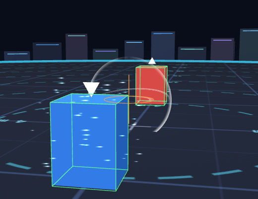
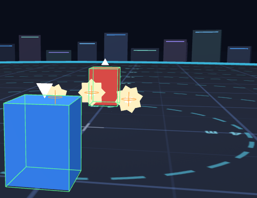
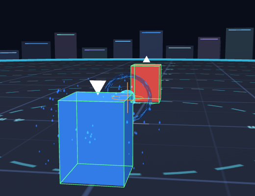
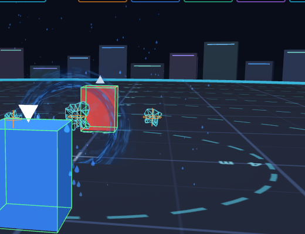
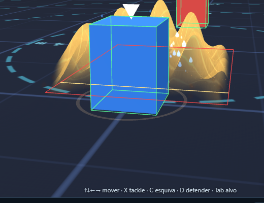
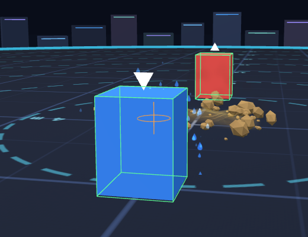
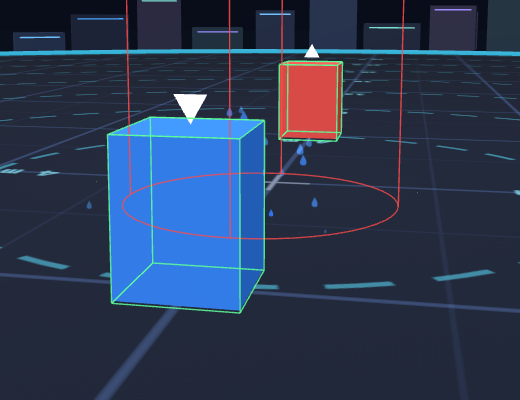
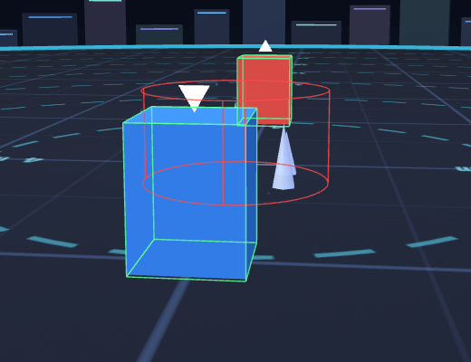

Gerado em 2026-10-25 (GPU real) por prototypes/combat-lab/test/vfx-colisao.browser.mjs. O jogo roda ao vivo; o Move é disparado pela tecla e a partida é pausada no meio do voo. Laranja = esfera/anel de colisão do projétil; vermelho/amarelo = área; azul = barreira; verde = hurtbox dos lutadores. «Raio visual» = metade do maior lado da caixa envolvente da malha (só para efeitos com malha; partículas Quarks não têm malha medível).
| Move | Captura | Entidade | Raio de colisão (m) | Raio visual (m) | Leitura |
|---|---|---|---|---|---|
| air-slash |  | projectile (circle) | 0.6 | — | efeito de partículas: comparar na foto |
| swift |  | projectile (circle) | 0.2 | 0.544 | visual 172% MAIOR que a colisão · visual 180% MAIOR que a colisão · visual 169% MAIOR que a colisão |
| water-pulse |  | projectile (circle) | 0.38 | — | efeito de partículas: comparar na foto |
| psyshock |  | projectile (circle) | 0.2 | 0.333 | visual 66% MAIOR que a colisão · visual 167% MAIOR que a colisão · visual 75% MAIOR que a colisão |
| sand-wave |  | sandwave (box) | — | — | efeito de partículas: comparar na foto |
| seed-bomb |  | projectile (circle) | 0.24 | — | efeito de partículas: comparar na foto |
| fire-spin |  | area (circle) | 1.6 | — | efeito de partículas: comparar na foto |
| spikes |  | trap (circle) | 1.2 | 1.2 | visual ≈ colisão |